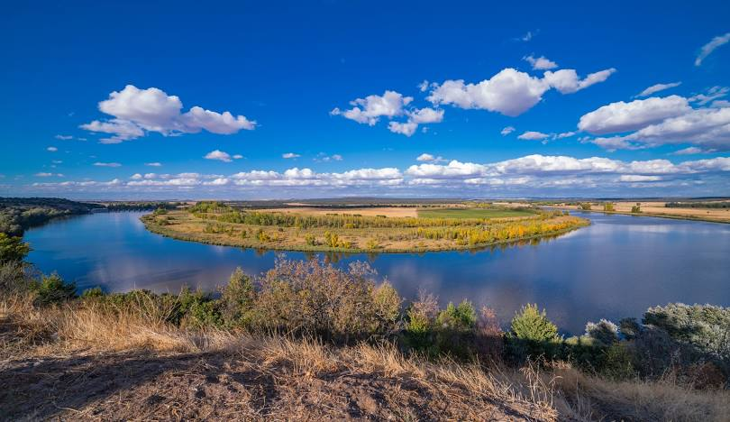

(Re) Encuentro Educativo · 24–28 agosto 2026 · Castronuño (Valladolid)
Cuatro días de formación intensiva, comunidad y naturaleza para empezar el curso con claridad y red profesional.
Quiero inscribirmePROFEST es un encuentro de docentes que combina formación rigurosa, convivencia real y entorno rural. No es un congreso masivo ni una sucesión de ponencias. Es un espacio de aprendizaje en comunidad.
Curso intensivo por las mañanas (12h en total).
Talleres y píldoras formativas por las tardes.
Espacios de bienestar y convivencia comunitaria.
*El horario puede ajustarse ligeramente para favorecer el bienestar del grupo.
Del 24 al 28 de agosto de 2026 en Castronuño (Valladolid), en plena Reserva Natural de las Riberas del Duero.
